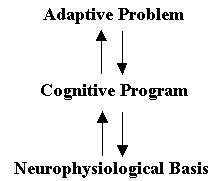
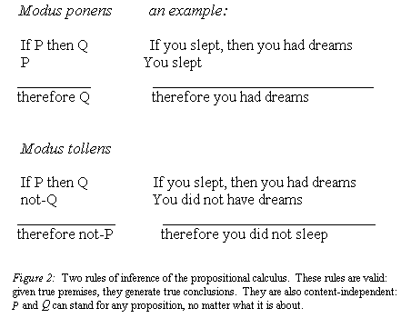

Human Nature
Evolutionary Psychology Introduction
Here is the original early work of Leda Cosmides & John Tooby. It is a bit more complex that our simplified introduction to evolutionary psychology, but well worth the read if you find the subject as fascinating as do we. Also, if you are interested in other fields of psychology, try looking into what a forensic psychology degree entails.
Evolutionary Psychology: A Primer
by Leda Cosmides & John Tooby
Introduction
The goal of research in evolutionary psychology is to discover and understand the design of the human mind. Evolutionary psychology is an approach to psychology, in which knowledge and principles from evolutionary biology are put to use in research on the structure of the human mind. It is not an area of study, like vision, reasoning, or social behavior. It is a way of thinking about psychology that can be applied to any topic within it.
In this view, the mind is a set of information-processing machines that were designed by natural selection to solve adaptive problems faced by our hunter-gatherer ancestors. This way of thinking about the brain, mind, and behavior is changing how scientists approach old topics, and opening up new ones. This chapter is a primer on the concepts and arguments that animate it.
Debauching the mind: Evolutionary psychology's past and present
In the final pages of the Origin of Species, after he had presented the theory of evolution by natural selection, Darwin made a bold prediction: "In the distant future I see open fields for far more important researches. Psychology will be based on a new foundation, that of the necessary acquirement of each mental power and capacity by gradation." Thirty years later, William James tried to do just that in his seminal book, Principles of Psychology, one of the founding works of experimental psychology (James, 1890). In Principles, James talked a lot of "instincts". This term was used to refer (roughly) to specialized neural circuits that are common to every member of a species and are the product of that species' evolutionary history. Taken together, such circuits constitute (in our own species) what one can think of as "human nature".
It was (and is) common to think that other animals are ruled by "instinct" whereas humans lost their instincts and are ruled by "reason", and that this is why we are so much more flexibly intelligent than other animals. William James took the opposite view. He argued that human behavior is more flexibly intelligent than that of other animals because we have more instincts than they do, not fewer. We tend to be blind to the existence of these instincts, however, precisely because they work so well -- because they process information so effortlessly and automatically. They structure our thought so powerfully, he argued, that it can be difficult to imagine how things could be otherwise. As a result, we take "normal" behavior for granted. We do not realize that "normal" behavior needs to be explained at all. This "instinct blindness" makes the study of psychology difficult. To get past this problem, James suggested that we try to make the "natural seem strange":
"It takes...a mind debauched by learning to carry the process of making the natural seem strange, so far as to ask for the why of any instinctive human act. To the metaphysician alone can such questions occur as: Why do we smile, when pleased, and not scowl? Why are we unable to talk to a crowd as we talk to a single friend? Why does a particular maiden turn our wits so upside-down? The common man can only say, Of course we smile, of course our heart palpitates at the sight of the crowd, of course we love the maiden, that beautiful soul clad in that perfect form, so palpably and flagrantly made for all eternity to be loved!
And so, probably, does each animal feel about the particular things it tends to do in the presence of particular objects. ... To the lion it is the lioness which is made to be loved; to the bear, the she-bear. To the broody hen the notion would probably seem monstrous that there should be a creature in the world to whom a nestful of eggs was not the utterly fascinating and precious and never-to-be-too-much-sat-upon object which it is to her.
Thus we may be sure that, however mysterious some animals' instincts may appear to us, our instincts will appear no less mysterious to them." (William James, 1890)
In our view, William James was right about evolutionary psychology. Making the natural seem strange is unnatural -- it requires the twisted outlook seen, for example, in Gary Larson cartoons. Yet it is a pivotal part of the enterprise. Many psychologists avoid the study of natural competences, thinking that there is nothing there to be explained. As a result, social psychologists are disappointed unless they find a phenomenon "that would surprise their grandmothers", and cognitive psychologists spend more time studying how we solve problems we are bad at, like learning math or playing chess, than ones we are good at. But our natural competences -- our abilities to see, to speak, to find someone beautiful, to reciprocate a favor, to fear disease, to fall in love, to initiate an attack, to experience moral outrage, to navigate a landscape, and myriad others -- are possible only because there is a vast and heterogenous array of complex computational machinery supporting and regulating these activities. This machinery works so well that we don't even realize that it exists -- We all suffer from instinct blindness. As a result, psychologists have neglected to study some of the most interesting machinery in the human mind.

Figure 1:Three complementary levels of explanation in evolutionary psychology.
Inferences (represented by the arrows) can be made from one level to another.
An evolutionary approach provides powerful lenses that correct for instinct blindness. It allows one to recognize what natural competences exist, it indicates that the mind is a heterogeneous collection of these competences and, most importantly, it provides positive theories of their designs. Einstein once commented that "It is the theory which decides what we can observe". An evolutionary focus is valuable for psychologists, who are studying a biological system of fantastic complexity, because it can make the intricate outlines of the mind's design stand out in sharp relief. Theories of adaptive problems can guide the search for the cognitive programs that solve them; knowing what cognitive programs exist can, in turn, guide the search for their neural basis. (See Figure 1.)
The Standard Social Science Model
One of our colleagues, Don Symons, is fond of saying that you cannot understand what a person is saying unless you understand who they are arguing with. Applying evolutionary biology to the study of the mind has brought most evolutionary psychologists into conflict with a traditional view of its structure, which arose long before Darwin. This view is no historical relic: it remains highly influential, more than a century after Darwin and William James wrote.
Both before and after Darwin, a common view among philosophers and scientists has been that the human mind resembles a blank slate, virtually free of content until written on by the hand of experience. According to Aquinas, there is "nothing in the intellect which was not previously in the senses." Working within this framework, the British Empiricists and their successors produced elaborate theories about how experience, refracted through a small handful of innate mental procedures, inscribed content onto the mental slate. David Hume's view was typical, and set the pattern for many later psychological and social science theories: "...there appear to be only three principles of connexion among ideas, namely Resemblance, Contiguity in time or place, and Cause or Effect."
Over the years, the technological metaphor used to describe the structure of the human mind has been consistently updated, from blank slate to switchboard to general purpose computer, but the central tenet of these Empiricist views has remained the same. Indeed, it has become the reigning orthodoxy in mainstream anthropology, sociology, and most areas of psychology. According to this orthodoxy, all of the specific content of the human mind originally derives from the "outside" -- from the environment and the social world -- and the evolved architecture of the mind consists solely or predominantly of a small number of general purpose mechanisms that are content-independent, and which sail under names such as "learning," "induction," "intelligence," "imitation," "rationality," "the capacity for culture," or simply "culture."
According to this view, the same mechanisms are thought to govern how one acquires a language, how one learns to recognize emotional expressions, how one thinks about incest, or how one acquires ideas and attitudes about friends and reciprocity -- everything but perception. This is because the mechanisms that govern reasoning, learning, and memory are assumed to operate uniformly, according to unchanging principles, regardless of the content they are operating on or the larger category or domain involved. (For this reason, they are described as content-independent or domain-general.) Such mechanisms, by definition, have no pre-existing content built-in to their procedures, they are not designed to construct certain contents more readily than others, and they have no features specialized for processing particular kinds of content. Since these hypothetical mental mechanisms have no content to impart, it follows that all the particulars of what we think and feel derive externally, from the physical and social world. The social world organizes and injects meaning into individual minds, but our universal human psychological architecture has no distinctive structure that organizes the social world or imbues it with characteristic meanings. According to this familiar view -- what we have elsewhere called the Standard Social Science Model -- the contents of human minds are primarily (or entirely) free social constructions, and the social sciences are autonomous and disconnected from any evolutionary or psychological foundation (Tooby & Cosmides, 1992).
Three decades of progress and convergence in cognitive psychology, evolutionary biology, and neuroscience have shown that this view of the human mind is radically defective. Evolutionary psychology provides an alternative framework that is beginning to replace it. On this view, all normal human minds reliably develop a standard collection of reasoning and regulatory circuits that are functionally specialized and, frequently, domain-specific. These circuits organize the way we interpret our experiences, inject certain recurrent concepts and motivations into our mental life, and provide universal frames of meaning that allow us to understand the actions and intentions of others. Beneath the level of surface variability, all humans share certain views and assumptions about the nature of the world and human action by virtue of these human universal reasoning circuits.
Back to Basics
How did evolutionary psychologists (EPs) arrive at this view? When rethinking a field, it is sometimes necessary to go back to first principles, to ask basic questions such as "What is behavior?" "What do we mean by 'mind'?" "How can something as intangible as a 'mind' have evolved, and what is its relation to the brain?". The answers to such questions provide the framework within which evolutionary psychologists operate. We will try to summarize some of these here.
Psychology is that branch of biology that studies (1) brains, (2) how brains process information, and (3) how the brain's information-processing programs generate behavior. Once one realizes that psychology is a branch of biology, inferential tools developed in biology -- its theories, principles, and observations -- can be used to understand psychology. Here are five basic principles -- all drawn from biology -- that EPs apply in their attempts to understand the design of the human mind. The Five Principles can be applied to any topic in psychology. They organize observations in a way that allows one to see connections between areas as seemingly diverse as vision, reasoning, and sexuality.
Principle 1. The brain is a physical system. It functions as a computer. Its circuits are designed to generate behavior that is appropriate to your environmental circumstances.
The brain is a physical system whose operation is governed solely by the laws of chemistry and physics. What does this mean? It means that all of your thoughts and hopes and dreams and feelings are produced by chemical reactions going on in your head (a sobering thought). The brain's function is to process information. In other words, it is a computer that is made of organic (carbon-based) compounds rather than silicon chips. The brain is comprised of cells: primarily neurons and their supporting structures. Neurons are cells that are specialized for the transmission of information. Electrochemical reactions cause neurons to fire.
Neurons are connected to one another in a highly organized way. One can think of these connections as circuits -- just like a computer has circuits. These circuits determine how the brain processes information, just as the circuits in your computer determine how it processes information. Neural circuits in your brain are connected to sets of neurons that run throughout your body. Some of these neurons are connected to sensory receptors, such as the retina of your eye. Others are connected to your muscles. Sensory receptors are cells that are specialized for gathering information from the outer world and from other parts of the body. (You can feel your stomach churn because there are sensory receptors on it, but you cannot feel your spleen, which lacks them.) Sensory receptors are connected to neurons that transmit this information to your brain. Other neurons send information from your brain to motor neurons. Motor neurons are connected to your muscles; they cause your muscles to move. This movement is what we call behavior.
Organisms that don't move, don't have brains. Trees don't have brains, bushes don't have brains, flowers don't have brains. In fact, there are some animals that don't move during certain stages of their lives. And during those stages, they don't have brains. The sea squirt, for example, is an aquatic animal that inhabits oceans. During the early stage of its life cycle, the sea squirt swims around looking for a good place to attach itself permanently. Once it finds the right rock, and attaches itself to it, it doesn't need its brain anymore because it will never need to move again. So it eats (resorbs) most of its brain. After all, why waste energy on a now useless organ? Better to get a good meal out of it.
In short, the circuits of the brain are designed to generate motion -- behavior -- in response to information from the environment. The function of your brain -- this wet computer -- is to generate behavior that is appropriate to your environmental circumstances.
Principle 2. Our neural circuits were designed by natural selection to solve problems that our ancestors faced during our species' evolutionary history.
To say that the function of your brain is to generate behavior that is "appropriate" to your environmental circumstances is not saying much, unless you have some definition of what "appropriate" means. What counts as appropriate behavior?
"Appropriate" has different meanings for different organisms. You have sensory receptors that are stimulated by the sight and smell of feces -- to put it more bluntly, you can see and smell dung. So can a dung fly. But on detecting the presence of feces in the environment, what counts as appropriate behavior for you differs from what is appropriate for the dung fly. On smelling feces, appropriate behavior for a female dung fly is to move toward the feces, land on them, and lay her eggs. Feces are food for a dung fly larva -- therefore, appropriate behavior for a dung fly larva is to eat dung. And, because female dung flies hang out near piles of dung, appropriate behavior for a male dung fly is to buzz around these piles, trying to mate; for a male dung fly, a pile of dung is a pick-up joint.
But for you, feces are a source of contagious diseases. For you, they are not food, they are not a good place to raise your children, and they are not a good place to look for a date. Because a pile of dung is a source of contagious diseases for a human being, appropriate behavior for you is to move away from the source of the smell. Perhaps your facial muscles will form the cross-culturally universal disgust expression as well, in which your nose wrinkles to protect eyes and nose from the volatiles and the tongue protrudes slightly, as it would were you ejecting something from your mouth.
For you, that pile of dung is "disgusting". For a female dung fly, looking for a good neighborhood and a nice house for raising her children, that pile of dung is a beautiful vision -- a mansion. (Seeing a pile of dung as a mansion -- that's what William James meant by making the natural seem strange).
The point is, environments do not, in and of themselves, specify what counts as "appropriate" behavior. In other words, you can't say "My environment made me do it!" and leave it at that. In principle, a computer or circuit could be designed to link any given stimulus in the environment to any kind of behavior. Which behavior a stimulus gives rise to is a function of the neural circuitry of the organism. This means that if you were a designer of brains, you could have engineered the human brain to respond in any way you wanted, to link any environmental input to any behavior -- you could have made a person who licks her chops and sets the table when she smells a nice fresh pile of dung.
But what did the actual designer of the human brain do, and why? Why do we find fruit sweet and dung disgusting? In other words, how did we get the circuits that we have, rather than those that the dung fly has?
When we are talking about a home computer, the answer to this question is simple: its circuits were designed by an engineer, and the engineer designed them one way rather than another so they would solve problems that the engineer wanted them to solve; problems such as adding or subtracting or accessing a particular address in the computer's memory. Your neural circuits were also designed to solve problems. But they were not designed by an engineer. They were designed by the evolutionary process, and natural selection is the only evolutionary force that is capable of creating complexly organized machines.
Natural selection does not work "for the good of the species", as many people think. As we will discuss in more detail below, it is a process in which a phenotypic design feature causes its own spread through a population (which can happen even in cases where this leads to the extinction of the species). In the meantime (to continue our scatological examples) you can think of natural selection as the "eat dung and die" principle. All animals need neural circuits that govern what they eat -- knowing what is safe to eat is a problem that all animals must solve. For humans, feces are not safe to eat -- they are a source of contagious diseases. Now imagine an ancestral human who had neural circuits that made dung smell sweet -- that made him want to dig in whenever he passed a smelly pile of dung. This would increase his probability of contracting a disease. If he got sick as a result, he would be too tired to find much food, too exhausted to go looking for a mate, and he might even die an untimely death. In contrast, a person with different neural circuits -- ones that made him avoid feces -- would get sick less often. He will therefore have more time to find food and mates and will live a longer life. The first person will eat dung and die; the second will avoid it and live. As a result, the dung-eater will have fewer children than the dung-avoider. Since the neural circuitry of children tends to resemble that of their parents, there will be fewer dung-eaters in the next generation, and more dung-avoiders. As this process continues, generation after generation, the dung-eaters will eventually disappear from the population. Why? They ate dung and died out. The only kind of people left in the population will be those like you and me -- ones who are descended from the dung-avoiders. No one will be left who has neural circuits that make dung delicious.
In other words, the reason we have one set of circuits rather than another is that the circuits that we have were better at solving problems that our ancestors faced during our species' evolutionary history than alternative circuits were. The brain is a naturally constructed computational system whose function is to solve adaptive information-processing problems (such as face recognition, threat interpretation, language acquisition, or navigation). Over evolutionary time, its circuits were cumulatively added because they "reasoned" or "processed information" in a way that enhanced the adaptive regulation of behavior and physiology.
Realizing that the function of the brain is information-processing has allowed cognitive scientists to resolve (at least one version of) the mind/body problem. For cognitive scientists, brain and mind are terms that refer to the same system, which can be described in two complementary ways -- either in terms of its physical properties (the brain), or in terms of its information-processing operation (the mind). The physical organization of the brain evolved because that physical organization brought about certain information-processing relationships -- ones that were adaptive.
It is important to realize that our circuits weren't designed to solve just any old kind of problem. They were designed to solve adaptive problems. Adaptive problems have two defining characteristics. First, they are ones that cropped up again and again during the evolutionary history of a species. Second, they are problems whose solution affected the reproduction of individual organisms -- however indirect the causal chain may be, and however small the effect on number of offspring produced. This is because differential reproduction (and not survival per se) is the engine that drives natural selection. Consider the fate of a circuit that had the effect, on average, of enhancing the reproductive rate of the organisms that sported it, but shortened their average lifespan in so doing (one that causes mothers to risk death to save their children, for example). If this effect persisted over many generations, then its frequency in the population would increase. In contrast, any circuit whose average effect was to decrease the reproductive rate of the organisms that had it would eventually disappear from the population. Most adaptive problems have to do with how an organism makes its living: what it eats, what eats it, who it mates with, who it socializes with, how it communicates, and so on. The only kind of problems that natural selection can design circuits for solving are adaptive problems.
Obviously, we are able to solve problems that no hunter-gatherer ever had to solve -- we can learn math, drive cars, use computers. Our ability to solve other kinds of problems is a side-effect or by-product of circuits that were designed to solve adaptive problems. For example, when our ancestors became bipedal -- when they started walking on two legs instead of four -- they had to develop a very good sense of balance. And we have very intricate mechanisms in our inner ear that allow us to achieve our excellent sense of balance. Now the fact that we can balance well on two legs while moving means that we can do other things besides walk -- it means we can skateboard or ride the waves on a surfboard. But our hunter-gatherer ancestors were not tunneling through curls in the primordial soup. The fact that we can surf and skateboard are mere by-products of adaptations designed for balancing while walking on two legs.
Principle 3. Consciousness is just the tip of the iceberg; most of what goes on in your mind is hidden from you. As a result, your conscious experience can mislead you into thinking that our circuitry is simpler that it really is. Most problems that you experience as easy to solve are very difficult to solve -- they require very complicated neural circuitry
You are not, and cannot become, consciously aware of most of your brain's ongoing activities. Think of the brain as the entire federal government, and of your consciousness as the President of the United States. Now think of yourself -- the self that you consciously experience as "you" -- as the President. If you were President, how would you know what is going on in the world? Members of the Cabinet, like the Secretary of Defense, would come and tell you things -- for example, that the Bosnian Serbs are violating their cease-fire agreement. How do members of the Cabinet know things like this? Because thousands of bureaucrats in the State Department, thousands of CIA operatives in Serbia and other parts of the world, thousands of troops stationed overseas, and hundreds of investigative reporters are gathering and evaluating enormous amounts of information from all over the world. But you, as President, do not -- and in fact, cannot -- know what each of these thousands of individuals were doing when gathering all this information over the last few months -- what each of them saw, what each of them read, who each of them talked to, what conversations were clandestinely taped, what offices were bugged. All you, as President, know is the final conclusion that the Secretary of Defense came to based on the information that was passed on to him. And all he knows is what other high level officials passed on to him, and so on. In fact, no single individual knows all of the facts about the situation, because these facts are distributed among thousands of people. Moreover, each of the thousands of individuals involved knows all kinds of details about the situation that they decided were not important enough to pass on to higher levels.
So it is with your conscious experience. The only things you become aware of are a few high level conclusions passed on by thousands and thousands of specialized mechanisms: some that are gathering sensory information from the world, others that are analyzing and evaluating that information, checking for inconsistencies, filling in the blanks, figuring out what it all means.
It is important for any scientist who is studying the human mind to keep this in mind. In figuring out how the mind works, your conscious experience of yourself and the world can suggest some valuable hypotheses. But these same intuitions can seriously mislead you as well. They can fool you into thinking that our neural circuitry is simpler that it really is.
Consider vision. Your conscious experience tells you that seeing is simple: You open your eyes, light hits your retina, and -- voila! -- you see. It is effortless, automatic, reliable, fast, unconscious and requires no explicit instruction -- no one has to go to school to learn how to see. But this apparent simplicity is deceptive. Your retina is a two-dimensional sheet of light sensitive cells covering the inside back of your eyeball. Figuring out what three-dimensional objects exist in the world based only on the light-dependent chemical reactions occurring in this two dimensional array of cells poses enormously complex problems -- so complex, in fact, that no computer programmer has yet been able to create a robot that can see the way we do. You see with your brain, not just your eyes, and your brain contains a vast array of dedicated, special purpose circuits -- each set specialized for solving a different component of the problem. You need all kinds of circuits just to see your mother walk, for example. You have circuits that are specialized for (1) analyzing the shape of objects; (2) detecting the presence of motion; (3) detecting the direction of motion; (4) judging distance; (5) analyzing color; (6) identifying an object as human; (7) recognizing that the face you see is Mom's face, rather than someone else's. Each individual circuit is shouting its information to higher level circuits, which check the "facts" generated by one circuit against the "facts" generated by the others, resolving contradictions. Then these conclusions are handed over to even higher level circuits, which piece them all together and hand the final report to the President -- your consciousness. But all this "president" ever becomes aware of is the sight of Mom walking. Although each circuit is specialized for solving a delimited task, they work together to produce a coordinated functional outcome -- in this case, your conscious experience of the visual world. Seeing is effortless, automatic, reliable, and fast precisely because we have all this complicated, dedicated machinery.
In other words, our intuitions can deceive us. Our conscious experience of an activity as "easy" or "natural" can lead us to grossly underestimate the complexity of the circuits that make it possible. Doing what comes "naturally", effortlessly, or automatically is rarely simple from an engineering point of view. To find someone beautiful, to fall in love, to feel jealous -- all can seem as simple and automatic and effortless as opening your eyes and seeing. So simple that it seems like there is nothing much to explain. But these activities feel effortless only because there is a vast array of complex neural circuitry supporting and regulating them.
Principle 4. Different neural circuits are specialized for solving different adaptive problems.
A basic engineering principle is that the same machine is rarely capable of solving two different problems equally well. We have both screw drivers and saws because each solves a particular problem better than the other. Just imagine trying to cut planks of wood with a screw driver or to turn screws with a saw.
Our body is divided into organs, like the heart and the liver, for exactly this reason. Pumping blood throughout the body and detoxifying poisons are two very different problems. Consequently, your body has a different machine for solving each of them. The design of the heart is specialized for pumping blood; the design of the liver is specialized for detoxifying poisons. Your liver can't function as a pump, and your heart isn't any good at detoxifying poisons.
For the same reason, our minds consist of a large number of circuits that are functionally specialized. For example, we have some neural circuits whose design is specialized for vision. All they do is help you see. The design of other neural circuits is specialized for hearing. All they do is detect changes in air pressure, and extract information from it. They do not participate in vision, vomiting, vanity, vengeance, or anything else. Still other neural circuits are specialized for sexual attraction -- i.e., they govern what you find sexually arousing, what you regard as beautiful, who you'd like to date, and so on.
We have all these specialized neural circuits because the same mechanism is rarely capable of solving different adaptive problems. For example, we all have neural circuitry designed to choose nutritious food on the basis of taste and smell -- circuitry that governs our food choice. But imagine a woman who used this same neural circuitry to choose a mate. She would choose a strange mate indeed (perhaps a huge chocolate bar?). To solve the adaptive problem of finding the right mate, our choices must be guided by qualitatively different standards than when choosing the right food, or the right habitat. Consequently, the brain must be composed of a large collection of circuits, with different circuits specialized for solving different problems. You can think of each of these specialized circuits as a mini-computer that is dedicated to solving one problem. Such dedicated mini-computers are sometimes called modules. There is, then, a sense in which you can view the brain as a collection of dedicated mini-computers -- a collection of modules. There must, of course, be circuits whose design is specialized for integrating the output of all these dedicated mini-computers to produce behavior. So, more precisely, one can view the brain as a collection of dedicated mini-computers whose operations are functionally integrated to produce behavior.
Psychologists have long known that the human mind contains circuits that are specialized for different modes of perception, such as vision and hearing. But until recently, it was thought that perception and, perhaps, language were the only activities caused by cognitive processes that are specialized (e.g., Fodor, 1983). Other cognitive functions -- learning, reasoning, decision-making -- were thought to be accomplished by circuits that are very general purpose: jacks-of-all-trades, but masters of none. Prime candidates were "rational" algorithms: ones that implement formal methods for inductive and deductive reasoning, such as Bayes's rule or the propositional calculus (a formal logic). "General intelligence" -- a hypothetical faculty composed of simple reasoning circuits that are few in number, content-independent, and general purpose -- was thought to be the engine that generates solutions to reasoning problems. The flexibility of human reasoning -- that is, our ability to solve many different kinds of problems -- was thought to be evidence for the generality of the circuits that generate it.
An evolutionary perspective suggests otherwise (Tooby & Cosmides, 1992). Biological machines are calibrated to the environments in which they evolved, and they embody information about the stably recurring properties of these ancestral worlds. (E.g., human color constancy mechanisms are calibrated to natural changes in terrestrial illumination; as a result, grass looks green at both high noon and sunset, even though the spectral properties of the light it reflects have changed dramatically.) Rational algorithms do not, because they are content-independent. Figure 2 shows two rules of inference from the propositional calculus, a system that allows one to deduce true conclusions from true premises, no matter what the subject matter of the premises is -- no mattter what P and Q refer to. Bayes's rule, an equation for computing the probability of a hypothesis given data, is also content-independent. It can be applied indiscriminately to medical diagnosis, card games, hunting success, or any other subject matter. It contains no domain-specific knowledge, so it cannot support inferences that would apply to mate choice, for example, but not to hunting. (That is the price of content-independence.)

Evolved problem-solvers, however, are equipped with crib sheets: they come to a problem already "knowing" a lot about it. For example, a newborn's brain has response systems that "expect" faces to be present in the environment: babies less than 10 minutes old turn their eyes and head in response to face-like patterns, but not to scrambled versions of the same pattern with identical spatial frequencies (Johnson & Morton, 1991). Infants make strong ontological assumptions about how the world works and what kinds of things it contains -- even at 2 1/2 months (the point at which they can see well enough to be tested). They assume, for example, that it will contain rigid objects that are continuous in space and time, and they have perfered ways of parsing the world into separate objects (e.g., Baillergeon, 1986; Spelke, 1990). Ignoring shape, color, and texture, they treat any surface that is cohesive, bounded, and moves as a unit as a single object. When one solid object appears to pass through another, these infants are surprised. Yet a system with no "privileged" hypotheses -- a truly "open-minded" system -- would be undisturbed by such displays. In watching objects interact, babies less than a year old distinguish causal events from non-causal ones that have similar spatio-temporal properties; they distinguish objects that move only when acted upon from ones that are capable of self-generated motion (the inanimate/animate distinction); they assume that the self-propelled movement of animate objects is caused by invisible internal states -- goals and intentions -- whose presence must be inferred, since internal states cannot be seen (Baron-Cohen, 1995; Leslie, 1988; 1994). Toddlers have a well-developed "mind-reading" system, which uses eye direction and movement to infer what other people want, know, and believe (Baron-Cohen, 1995). (When this system is impaired, as in autism, the child cannot infer what others believe.) When an adult utters a word-like sound while pointing to a novel object, toddlers assume the word refers to the whole object, rather than one of its parts (Markman, 1989).
Without these privileged hypotheses -- about faces, objects, physical causality, other minds, word meanings, and so on -- a developing child could learn very little about its environment. For example, a child with autism who has a normal IQ and intact perceptual systems is, nevertheless, unable to make simple inferences about mental states (Baron-Cohen, 1995). Children with Williams syndrome are profoundly retarded and have difficulty learning even very simple spatial tasks, yet they are good at inferring other people's mental states. Some of their reasoning mechanisms are damaged, but their mind-reading system is intact.
Different problems require different crib sheets. For example, knowledge about intentions, beliefs, and desires, which allows one to infer the behavior of persons, will be misleading if applied to inanimate objects. Two machines are better than one when the crib sheet that helps solve problems in one domain is misleading in another. This suggests that many evolved computational mechanisms will be domain-specific: they will be activated in some domains but not others. Some of these will embody rational methods, but others will have special purpose inference procedures that respond not to logical form but to content-types -- procedures that work well within the stable ecological structure of a particular domain, even though they might lead to false or contradictory inferences if they were activated outside of that domain.
The more crib sheets a system has, the more problems it can solve. A brain equipped with a multiplicity of specialized inference engines will be able to generate sophisticated behavior that is sensitively tuned to its environment. In this view, the flexibility and power often attributed to content-independent algorithms is illusory. All else equal, a content-rich system will be able to infer more than a content-poor one.
Machines limited to executing Bayes's rule, modus ponens, and other "rational" procedures derived from mathematics or logic are computationally weak compared to the system outlined above (Tooby and Cosmides, 1992). The theories of rationality they embody are "environment-free" -- they were designed to produce valid inferences in all domains. They can be applied to a wide variety of domains, however, only because they lack any information that would be helpful in one domain but not in another. Having no crib sheets, there is little they can deduce about a domain; having no privileged hypotheses, there is little they can induce before their operation is hijacked by combinatorial explosion. The difference between domain-specific methods and domain-independent ones is akin to the difference between experts and novices: experts can solve problems faster and more efficiently than novices because they already know a lot about the problem domain.
William James's view of the mind, which was ignored for much of the 20th century, is being vindicated today. There is now evidence for the existence of circuits that are specialized for reasoning about objects, physical causality, number, the biological world, the beliefs and motivations of other individuals, and social interactions (for review, see Hirschfeld & Gelman, 1994). It is now known that the learning mechanisms that govern the acquisition of language are different from those that govern the acquisition of food aversions, and both of these are different from the learning mechanisms that govern the acquisition of snake phobias (Garcia, 1990; Pinker, 1994; Mineka & Cooke, 1985). Examples abound.
"Instincts" are often thought of as the polar opposite of "reasoning" and "learning". Homo sapiens are thought of as the "rational animal", a species whose instincts, obviated by culture, were erased by evolution. But the reasoning circuits and learning circuits discussed above have the following five properties: (1) they are complexly structured for solving a specific type of adaptive problem, (2) they reliably develop in all normal human beings, (3) they develop without any conscious effort and in the absence of any formal instruction, (4) they are applied without any conscious awareness of their underlying logic, and (5) they are distinct from more general abilities to process information or behave intelligently. In other words, they have all the hallmarks of what one usually thinks of as an "instinct" (Pinker, 1994). In fact, one can think of these special purpose computational systems as reasoning instincts and learning instincts. They make certain kinds of inferences just as easy, effortless, and "natural" to us as humans, as spinning a web is to a spider or dead-reckoning is to a desert ant.
Students often ask whether a behavior was caused by "instinct" or "learning". A better question would be "which instincts caused the learning?"
Principle 5. Our modern skulls house a stone age mind.
Natural selection, the process that designed our brain, takes a long time to design a circuit of any complexity. The time it takes to build circuits that are suited to a given environment is so slow it is hard to even imagine -- it's like a stone being sculpted by wind-blown sand. Even relatively simple changes can take tens of thousands of years.
The environment that humans -- and, therefore, human minds -- evolved in was very different from our modern environment. Our ancestors spent well over 99% of our species' evolutionary history living in hunter-gatherer societies. That means that our forebearers lived in small, nomadic bands of a few dozen individuals who got all of their food each day by gathering plants or by hunting animals. Each of our ancestors was, in effect, on a camping trip that lasted an entire lifetime, and this way of life endured for most of the last 10 million years.
Generation after generation, for 10 million years, natural selection slowly sculpted the human brain, favoring circuitry that was good at solving the day-to-day problems of our hunter-gatherer ancestors -- problems like finding mates, hunting animals, gathering plant foods, negotiating with friends, defending ourselves against aggression, raising children, choosing a good habitat, and so on. Those whose circuits were better designed for solving these problems left more children, and we are descended from them.
Our species lived as hunter-gatherers 1000 times longer than as anything else. The world that seems so familiar to you and me, a world with roads, schools, grocery stores, factories, farms, and nation-states, has lasted for only an eyeblink of time when compared to our entire evolutionary history. The computer age is only a little older than the typical college student, and the industrial revolution is a mere 200 years old. Agriculture first appeared on earth only 10,000 years ago, and it wasn't until about 5,000 years ago that as many as half of the human population engaged in farming rather than hunting and gathering. Natural selection is a slow process, and there just haven't been enough generations for it to design circuits that are well-adapted to our post-industrial life.
In other words, our modern skulls house a stone age mind. The key to understanding how the modern mind works is to realize that its circuits were not designed to solve the day-to-day problems of a modern American -- they were designed to solve the day-to-day problems of our hunter-gatherer ancestors. These stone age priorities produced a brain far better at solving some problems than others. For example, it is easier for us to deal with small, hunter-gatherer-band sized groups of people than with crowds of thousands; it is easier for us to learn to fear snakes than electric sockets, even though electric sockets pose a larger threat than snakes do in most American communities. In many cases, our brains are better at solving the kinds of problems our ancestors faced on the African savannahs than they are at solving the more familiar tasks we face in a college classroom or a modern city. In saying that our modern skulls house a stone age mind, we do not mean to imply that our minds are unsophisticated. Quite the contrary: they are very sophisticated computers, whose circuits are elegantly designed to solve the kinds of problems our ancestors routinely faced.
A necessary (though not sufficient) component of any explanation of behavior -- modern or otherwise -- is a description of the design of the computational machinery that generates it. Behavior in the present is generated by information-processing mechanisms that exist because they solved adaptive problems in the past -- in the ancestral environments in which the human line evolved.
For this reason, evolutionary psychology is relentlessly past-oriented. Cognitive mechanisms that exist because they solved problems efficiently in the past will not necessarily generate adaptive behavior in the present. Indeed, EPs reject the notion that one has "explained" a behavior pattern by showing that it promotes fitness under modern conditions (for papers on both sides of this controversy, see responses in the same journal issue to Symons (1990) and Tooby and Cosmides (1990a)).
Although the hominid line is thought to have evolved on the African savannahs, the environment of evolutionary adaptedness, or EEA, is not a place or time. It is the statistical composite of selection pressures that caused the design of an adaptation. Thus the EEA for one adaptation may be different from that for another. Conditions of terrestrial illumination, which form (part of) the EEA for the vertebrate eye, remained relatively constant for hundreds of millions of years (until the invention of the incandescent bulb); in contrast, the EEA that selected for mechanisms that cause human males to provision their offspring -- a situation that departs from the typical mammalian pattern -- appears to be only about two million years old.
The Five Principles are tools for thinking about psychology, which can be applied to any topic: sex and sexuality, how and why people cooperate, whether people are rational, how babies see the world, conformity, aggression, hearing, vision, sleeping, eating, hypnosis, schizophrenia and on and on. The framework they provide links areas of study, and saves one from drowning in particularity. Whenever you try to understand some aspect of human behavior, they encourage you to ask the following fundamental questions:
• Where in the brain are the relevant circuits and how, physically, do they work?
• What kind of information is being processed by these circuits?
• What information-processing programs do these circuits embody? and
• What were these circuits designed to accomplish (in a hunter-gatherer context)?
Now that we have dispensed with this preliminary throat-clearing, it is time to explain the theoretical framework from which the Five Principles -- and other fundamentals of evolutionary psychology -- were derived.
Please join us on page two.
Copyright John Tooby and Leda Cosmides, 1997.
Original Paper at
UCSB Updated January 13, 1997
^ Top ^